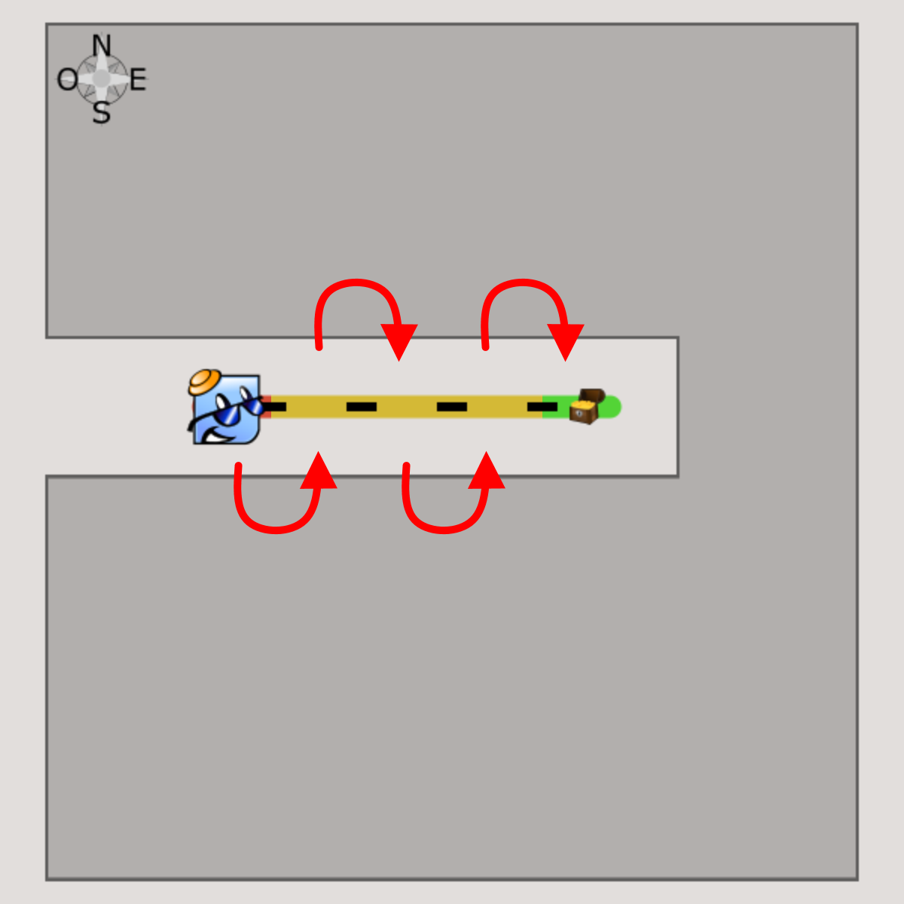

Comment guider {ROBOT_NAME}?
|
Voici à quoi ressemble ta carte. Tu as une rose des vents qui t’indique l’orientation de la carte. Tu as le trajet qui doit être accompli par Robotino. Le segment vert avec le trésor indique le point d’arrivée. |
|
{ROBOT_NAME} avance dans ce sens. |
|  |
À chaque fois que tu utilises un bloc , {ROBOT_NAME} effectue un déplacement d’un espace vers un autre. |
|
Tu peux indiquer à Robotino de tourner vers l’un des points cardinaux (Nord, Sud, Est ou Ouest), à l’aide de ce bloc : |
Ce bloc va pouvoir te servir à simplifier ton programme.
Tu peux placer à l’intérieur plusieurs actions que {ROBOT_NAME} pourra répéter jusqu’à ce qu’il arrive au trésor.
Exemple: Si tu places un bloc à l’intérieur, {ROBOT_NAME} avancera jusqu’à la fin.
Porte une attention particulière aux informations que {ROBOT_NAME} te donne.
Il peut parfois te donner un nombre maximum de blocs que tu peux
utiliser.
Exemple: utilises maximum 6 blocs...
Une dernière chose avant de partir à la chasse aux trésors.
Si tu fais une erreur, tu peux replacer {ROBOT_NAME} au point de départ avec ce bouton:
A toi de jouer !

Clique sur le bouton SUIVANT en haut pour continuer